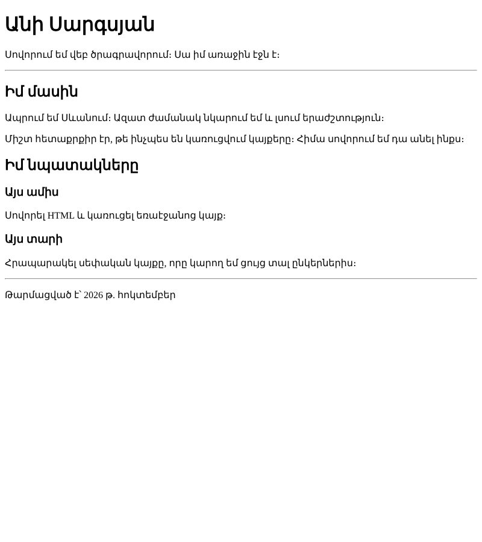

Տնային աշխատանք · HTML Դաս 01 · մինի-նախագիծ
Քո առաջին իրական էջը՝ ձեռքով գրված կմախքով, վերնագրերով, պարբերություններով և մեկնաբանություններով։ Այս էջը սկիզբն է կայքի, որը կաճի հաջորդ չորս դասերին։
Օգտագործիր միայն Դաս 01-ի թեգերը՝ կմախքը, h1–h6, p, hr, br և մեկնաբանություններ։ Դեռ մի՛ օգտագործիր հղումներ և նկարներ (Դաս 02) և ոչ մի CSS (Դաս 06)։
Մեկ էջ քո մասին՝ վերնագրերով, պարբերություններով և բաժանարար գծերով։ CSS չկա, ուստի էջը կունենա բրաուզերի լռելյայն տեսքը․ այդպես էլ պետք է լինի։

Լավագույն տարբերակը քո սեփական տեքստերն են։ Այս էջը կաճի հաջորդ չորս դասերին և կդառնա քո առաջին կայքը։
Բացիր թղթապանակը VS Code-ով՝ File → Open Folder, ոչ թե առանձին ֆայլը։ Բոլոր անունները՝ փոքրատառ, առանց բացատների։
Գրիր կմախքը առանց ! + Tab-ի։ Ամեն տողից հետո մտածիր՝ ինչ է այն անում։
<!DOCTYPE html>
<html lang="hy">
<head>
<meta charset="UTF-8">
<meta name="viewport" content="width=device-width, initial-scale=1.0">
<title>Անի Սարգսյան — իմ առաջին էջը</title>
</head>
<body>
</body>
</html>Գործարկիր Live Server-ը։ Ներդիրում պետք է երևա քո title-ը, իսկ էջը դեռ դատարկ է։
body-ի ներսում՝ մեկ h1 քո անունով և մեկ p։ Հետո՝ hr։ hr-ը փակվող թեգ չունի։
h2 և երկու ph2, իսկ ներսում երկու h3 («Այս ամիս», «Այս տարի»), ամեն մեկի տակ՝ phr և պարբերություն թարմացման ամսաթվովh3-ը միշտ h2-ի ներսում է։ Մի՛ ընտրիր վերնագիրը չափի համար․ չափը կփոխենք CSS-ով։
Ամեն բաժնից առաջ դիր մեկնաբանություն։ Բրաուզերը դրանք չի ցույց տալիս, բայց մեկ ամիս անց դու արագ կգտնես ճիշտ տեղը։
<!-- ===== Իմ մասին ===== -->
<h2>Իմ մասին</h2>Ամեն ներդրված տարր՝ 4 բացատ աջ։ Բացիր DevTools-ը (F12), Elements ներդիրում բացիր body-ն և համոզվիր, որ կառուցվածքը նույնն է, ինչ քո կոդում։
lesson-01/՝ index.html, css/, images/lang="hy" և meta charset="UTF-8"title-ը իմաստալից է և երևում է ներդիրումh1, առնվազն երկու h2, չորս p և մեկ hrh3-երը գտնվում են h2-ի ներսումhr-ից և meta-ից)style ատրիբուտ| Սխալ | Ինչպես ուղղել |
|---|---|
| Հայերեն տեքստը երևում է որպես «Õ€Õ¡Õµ» նշաններ | meta charset="UTF-8"-ը բացակայում է կամ սխալ է գրված |
| Live Server-ը բացում է թղթապանակի ցուցակ, ոչ էջը | Ֆայլը կոչվում է Index.html կամ index.htm։ Ճիշտը՝ index.html |
| Ամբողջ էջը դարձել է վերնագիր | Մոռացել ես փակել </h1>-ը |
Սրանք Դաս 01-ի տնային աշխատանքի կետերն են։ «մինի-նախագծում» նշվածները արդեն կատարել ես վերևի քայլերում, մնացածը կատարիր առանձին ֆայլերում կամ նույն թղթապանակում։
lesson-01 թղթապանակը ճիշտ կառուցվածքով՝ index.html, css/, images/։ մինի-նախագծում! + Tab։ Առնվազն երեք անգամ՝ երեք տարբեր ֆայլում։ մինի-նախագծումh1, երկու h2, չորս p և մեկ hr։ մինի-նախագծում<meta charset="UTF-8"> տողը։ Ի՞նչ եղավ հայերեն տեքստի հետ։ Վերականգնիր։<title>-ը և ցույց տուր, թե որտեղ է այն երևում բրաուզերում։ մինի-նախագծում<h1>-ը և փոխիր տեքստը։ Ուղարկիր սքրինշոթ։Երբ բաժին 03-ի բոլոր կետերը նշված են, բացիր օրինակը և քո էջը կողք կողքի։ Բացիր երկուսի կոդն էլ խմբագրիչում։ Գտիր մեկ բան, որ դու արել ես այլ կերպ, և մտածիր՝ որն է ավելի հասկանալի և ինչու։ Քո լուծումը կարող է տարբերվել և լինել ճիշտ։